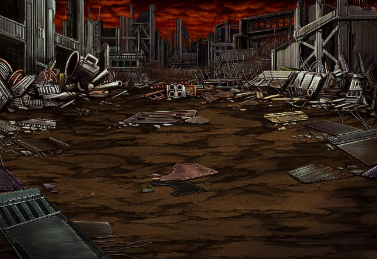
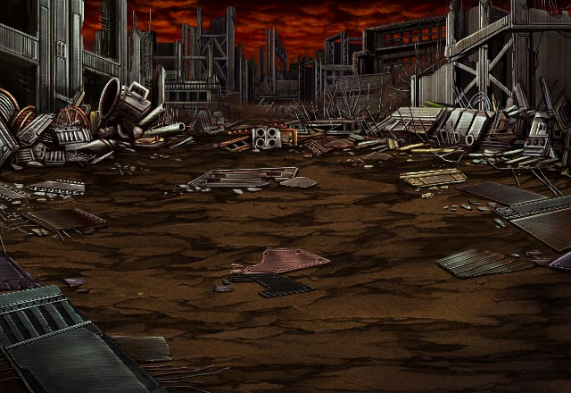
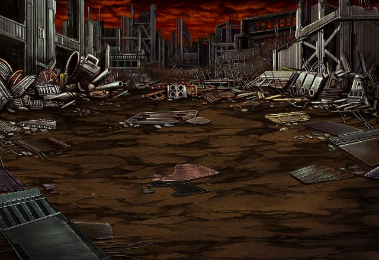

不気味な男
カルに会ったようだな。
不気味な男
そうだ、グラデンスの言っていた通り 俺の名はミーファ。
ミーファ
イシュグリア先遣隊の生き残りだ。
ミーファ
カルはお前を信用できると言っていたが 俺は直接戦った者以外認めない。
ミーファ
先遣隊の隊長であったグリフさんが そうであったようにな。
ミーファ
いくぞ、Shou-chan！
ミーファ
生き延びるために魔神の力をも取り込んだ 俺の意志と力、その身に受けてみろ！
 
